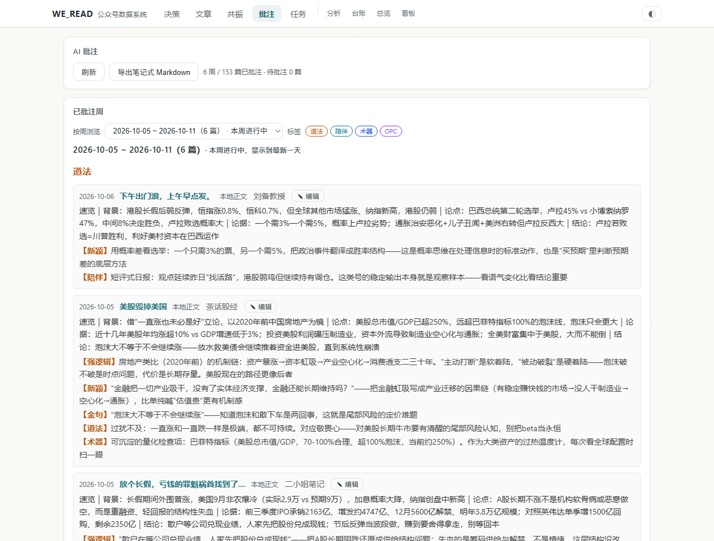

数据与成果 DATA & NOTES
系统已在本地持续运行：一批财经公众号的文章、阅读数据与 AI 批注被沉淀为可回溯的个人认知库。以下均为真实运行数据（截至 2026-10-07）。
13个公众号追踪
6,414篇文章入库
153篇已完成批注
539条认知批注
四类批注标签 NOTE TAXONOMY
批注不是「摘抄」，而是把一篇文章压缩成可复用的认知单元——每一条都归属一个明确的用途。
道法
原则与心法：文章背后那条「更底层的道理」，对应敬畏心、过犹不及这类长期有效的判断框架。
· 判断框架
陪伴
情绪样本：观察一个号在某个时点的语气与状态——看语气变化比看结论重要，这是市场情绪的纹理。
· 情绪观察
术器
可复用工具：能量化的检查项、指标与操作方法，如巴菲特指标、胜率结构翻译——下次直接调用。
· 工具沉淀
OPC
客观-判断-结论：把信息拆成事实、解读与行动三层，防止把「观点」误当成「事实」。
· 信息分层
批注工作台实况
按周浏览：每篇生成「速览四段式」（背景 / 论点 / 论据 / 结论）+ 类型化批注条。AI 起草、人工审改，最终导出为笔记式 Markdown 沉淀。
